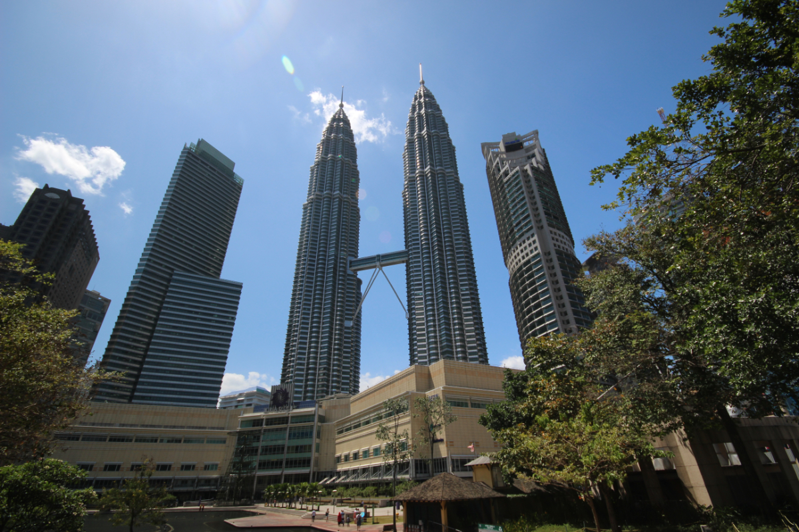
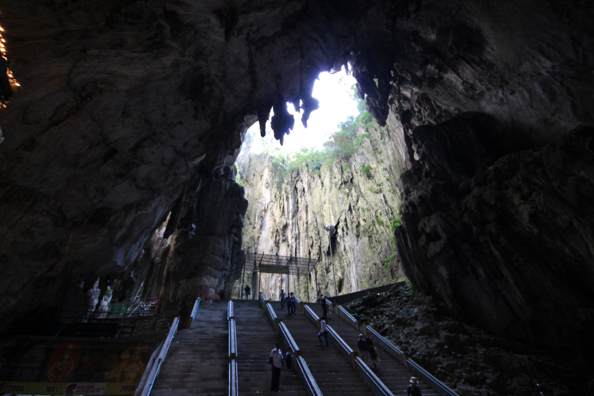
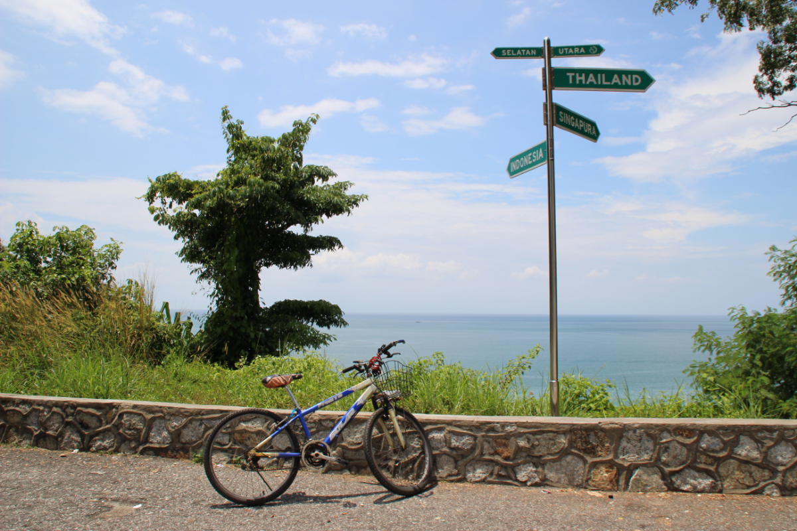

Malaysia
マレーシア
主な観光地
- クアラルンプール
- ペナン島
- マラッカ
- キャメロンハイランド
- コタキナバル(カリマンタン島)
- ランカウイ島
Tourist spot

ペトロナスツインタワー
クアラルンプール市内にある高層ビルで、ツインタワー
としては世界一の高さを誇ります。86階にある展望フロア
は一般人の見学も可能で、また目の前にあるKLCCパーク
では美しい噴水ショーが開催されます。

バトゥ洞窟
クアラルンプール市の北側にある鍾乳洞。
272段ある入口の階段を上ると目の前に巨大な鍾乳洞が
広がり、天井から差し込む光芒と相まってとても神秘的な
雰囲気を感じることができます。

パンコール島
クアラルンプールから北へバスで約4時間、ルムッという町
の沖にある島。バイクで20分もあれば周囲を一周できて
しまうほど小さな島ですが、島中に木々が生い茂り自然の中
でのんびりとしたい人におすすめです。